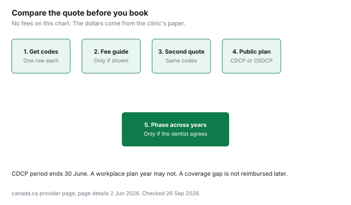

Healthcare · Canada
Dental Work Without Overpaying in Canada: Fee Guides, Cash Quotes, Dental Schools and Public Programs
A large dental quote is negotiable only after it is itemized. Canadian clinics are not a single national price list. Provincial dental associations publish suggested fee guides. The Canadian Dental Care Plan uses a different grid. A second clinic can charge a third number. This page is a way to compare those numbers without inventing a "typical" crown. No 2026 fee-guide PDF was opened for this guide, so no guide dollar appears below. Education only, not dental advice.
Key takeaways
- Canada.ca says CDCP fees are set independently of the fees suggested by provincial and territorial associations, which providers often charge. Association guides are described there as suggested, not as a bill the plan pays.
- Compare quotes on procedure codes, not on a one-line total. Ask what is the clinic fee, what a plan or the CDCP fee is, and what you pay.
- Faculty clinic pages exist at several Canadian dental schools. This draft did not open their fees or wait lists, so none are printed. Read the school's own description of who treats you.
- Public options depend on age and province: the Canadian Dental Care Plan, Ontario Seniors Dental Care, Healthy Smiles Ontario for children 17 and under, and community health centres.
- Phasing treatment across two benefit years is a calendar question. The medical expense credit is a separate 12-month window, on the credit guide.
How provincial dental fee guides work and why clinics can charge above them
The Canadian Dental Association homepage opened on 26 Sep 2026 is a public-education site. It did not print fee-guide dollars or a rule that clinics must charge a guide. The useful sentence is on the federal provider page for the Canadian Dental Care Plan, page details 2 Jun 2026: CDCP fees are set independently from the fees suggested by provincial and territorial associations and outlined in their fee guides, and those suggested fees are often what providers charge. "Suggested" is the word on that page. This draft did not open a statute that forces a private clinic to match the association guide. Ask the clinic which number it used.
The Ontario Dental Association site and the British Columbia Dental Association site (bcdental.org) both responded on 26 Sep 2026. This draft did not open a public 2026 fee schedule from either, so it does not say whether the current guide is posted for patients or only sold to members. If the guide is not public, you cannot audit a quote against it from your kitchen table. You can still ask the clinic, in writing, whether each code is at the association's suggested fee, above it, or on the CDCP grid. The CDCP guide explains the co-pay on the federal fee, which is a different column from the association guide.
Charging above a suggested guide is not, by itself, a fact this page can call improper. It is a reason to get a second itemized quote. Charging above the CDCP fee is explicitly contemplated on the CDCP coverage page: you may pay the difference. Those are two different "above." Do not mix them in one argument at the front desk.
Asking for a pre-treatment estimate and itemized codes (and comparing two quotes)
Ask for a pre-treatment estimate that lists a procedure code, a short description, the tooth if relevant, and the fee. Two quotes are comparable only when the codes match. A "crown" at one clinic and a "crown plus core plus post" at another are not the same job. If a code needs preauthorization under the CDCP, the coverage page says so for crowns, cores, posts, and partial dentures, among other services. Get that answer before you schedule.
Fill the worksheet below with the clinic's paper, not with numbers from a blog. Leave the fee-guide column blank if you were not shown a guide. Leave the plan column blank if you are paying cash. Your share is clinic fee minus what a plan or the CDCP actually pays, plus any amount the clinic adds above a plan fee. The coordination guide is the order of payment when two workplace plans both touch the same code. A health spending account is an election, explained on the HSA guide, and it can count as private dental access for the CDCP.
| Procedure code | Description | Clinic A fee | Clinic B fee | Fee-guide reference, if they show it | CDCP or plan payment | Your share |
|---|---|---|---|---|---|---|
| Write the code | What the clinic says the code includes | From quote A | From quote B, same code | Blank unless the clinic or the association shows the suggested fee | CDCP fee times the plan's share, or the insurer's estimate | What you pay, including any amount above the plan fee |
| Second code | Repeat per line. Do not collapse a crown, a core, and a post into one row. |

Dental school and hygiene-school clinics: what they cost, who they suit, and wait trade-offs
Faculty pages that opened on 26 Sep 2026 include the University of Toronto faculty patient site, UBC Dentistry treatment pages, the McGill dental clinics page, Dalhousie Dentistry's patient page, Western's Schulich dental clinics page, the University of Manitoba dentistry site, the University of Alberta School of Dentistry, the University of Saskatchewan College of Dentistry, and Université Laval's faculty of dental medicine. Université de Montréal has a dental faculty. A clinic URL tried for this guide did not resolve, so it is not linked. Confirm the current clinic page on the university's own site.
None of those pages was used to copy a fee or a wait time. If a school posts a lower fee, it will be on that page, dated by the school, and it can change. Read who provides care. Student clinics often mean longer appointments because the work is checked. That is a time cost, not a quality insult and not a guarantee. The federal provider page says dental schools and educational institutions for oral health professions can bill the CDCP, and that participation is voluntary. Call and ask whether that school's clinic is billing Sun Life for CDCP clients this month. Do not assume a teaching clinic is in the plan because the category exists.
Hygiene-school clinics are a separate booking line from a dental-faculty clinic. This draft did not open a hygiene-school fee. Ask what services a student hygienist can do, who supervises, and what is referred out. A cheaper cleaning that cannot take an x-ray you need is not a complete substitute for the dentist's exam.
Public options by life stage: CDCP, Ontario Seniors Dental Care, Healthy Smiles and community health centres
Adults without private dental look first at the Canadian Dental Care Plan: adjusted family net income under $90,000, taxes filed, and no private dental access. The co-pay is 0, 40, or 60 percent of the CDCP fee. It is not free dentistry at every income, and the dentist can charge above the fee.
Ontario residents 65 and older look at the Ontario Seniors Dental Care Program beside the CDCP, on the comparison page. The seniors page, updated 31 Jul 2026, lists net income of $25,480 or less for a single senior and $42,290 or less for a couple, and it allows the CDCP as the exception to "no other dental benefits." Care is through public health units, partner community health centres, and partner Aboriginal Health Access Centres. Routine services listed there include exams, cleanings, fillings, and extractions. Dentures are partially covered. Phone 416-916-0204 or 1-833-207-4435.
Children and youth in Ontario look at Healthy Smiles Ontario, on the get-dental-care page updated 2 Jul 2026. It is free preventive, routine, and emergency dental care for eligible children 17 and under. Cosmetic dentistry, including whitening and braces, is not covered. As of 1 Jul 2026, a household with one child qualifies at family net income of $29,065 or lower. The same table steps up by child count, and the page says to add $2,200 for each additional dependent child beyond the printed rows. Coverage is up to one benefit year, 1 Aug to 31 Jul, or until the 18th birthday. Some children on Ontario Works or ODSP are enrolled automatically. The page tells Ontario Works recipients in a First Nations community to apply by mail.
Community health centres are a place to ask, not a blank cheque. Ontario's community health centres page opened on 26 Sep 2026. The seniors dental page says partner centres are one OSDCP delivery site, and that the full range of services varies by community. Phone the centre and the public health unit. Other provinces run their own children's and seniors' programs. This page does not copy them from memory. Start from the provincial health ministry if you are not in Ontario.
| Route | Who it is for | What this guide opened | Source |
|---|---|---|---|
| Canadian Dental Care Plan | Residents who meet the four federal tests | Income under $90,000, no private dental access, co-pay tiers on the CDCP fee | canada.ca dental care plan |
| Ontario Seniors Dental Care | Ontario residents 65 and older | $25,480 single or $42,290 couple, CDCP allowed, dentures partial | ontario.ca dental care for seniors |
| Healthy Smiles Ontario | Children 17 and under in Ontario | As of 1 Jul 2026, one child at $29,065 family net income or lower. Not braces or whitening. | ontario.ca get dental care |
| Community health centres | Ask locally. OSDCP lists partner centres in Ontario. | No fee schedule opened | ontario.ca community health centres |
| Dental faculty clinics | Patients who can use a teaching clinic | Pages opened. Fees and waits not copied. | University clinic pages linked in the section above |
Prevention math: cleanings and recall intervals vs the cost of crowns and root canals
There is no honest national ratio of "one missed cleaning equals a crown" without the two fees. Get the code for the recall exam, the scaling, and the fluoride if it is recommended, and the code for the crown or the root canal you are trying to avoid. Put both quotes in the worksheet. The difference is your number. The CDCP coverage page lists exams, x-rays, scaling, and fluoride as diagnostic and preventive services, and it lists root canals, crowns, and dentures with their own rules, including preauthorization for crowns and for partial dentures. Preventive care being listed is not a statement that it is free. Your co-pay tier still applies to the CDCP fee.
Recall interval is a clinical recommendation. This page does not tell you to stretch it to save money. If a dentist recommends six months and you are choosing whether to book, the financial question is the quoted fee for that visit versus the quoted fee for the treatment you are postponing, plus the health risk the dentist described. Write the risk down in their words. A blog does not outrank that conversation.
Paying for big work: phasing treatment, benefit-year timing and the medical expense tax credit
Split a treatment plan only when the dentist agrees the delay is acceptable. The money reason to look at the calendar is that workplace dental maximums and the CDCP benefit period do not share one New Year. The CDCP renewal page says the benefit period ends each year on 30 June. A workplace plan might reset on 1 Jan or on the employer's plan anniversary. Ask both dates before you book a crown for late June. Work done in a coverage gap is not paid later by the CDCP. The sinking-fund guide is how to park the cash you will still owe.
Amounts you pay and are not reimbursed can belong on the medical expense tax credit. Dental services are on the CRA list as eligible. Teeth whitening is on that list as not eligible. The federal threshold for amounts paid in 2025 is the lesser of 3 percent of net income or $2,834, which is worked on the medical expense guide. The general household checklist is the credits page. A phased treatment can also be timed into a 12-month claim period ending in the tax year. That is tax mechanics, not a reason to delay care a dentist says is urgent.
If you have no plan and you do not qualify for a public program, the remaining choices are a cash quote, a faculty clinic you have actually priced, or a private policy you compare with cash on the gap-coverage guide. Buying a private dental plan gives you access to private coverage. The CDCP qualify page treats that access as a bar to the federal plan. Read both pages before you buy a policy to "use until the CDCP pays."
Sources & date stamps
- Canada.ca, CDCP information for oral health professionals, page details 2 Jun 2026. Suggested provincial and territorial fee guides, CDCP fees set independently, participation voluntary, dental schools may bill. Opened 26 Sep 2026.
- Canadian Dental Association homepage, opened 26 Sep 2026. No fee-guide dollar on that page.
- Ontario Dental Association and bcdental.org homepages responded 26 Sep 2026. No public 2026 fee schedule was opened from either.
- Canada.ca CDCP coverage and renewal pages, and ontario.ca seniors dental (updated 31 Jul 2026) and Healthy Smiles (updated 2 Jul 2026, income table as of 1 Jul 2026). Opened 26 Sep 2026.
- Faculty sites that responded: University of Toronto, UBC, McGill, Dalhousie, Western, Manitoba, Alberta, Saskatchewan, Laval. Fees not copied.
Frequently asked questions
Are dentists in Canada required to follow the fee guide?
No statute saying they must was opened for this guide. Canada.ca describes provincial and territorial association fee guides as suggested fees that providers often charge, and it says CDCP fees are set independently of those guides. Ask the clinic whether your quote is the association's suggested fee, the clinic's own fee, or the CDCP grid. Those are three different numbers.
How do I compare two dental quotes fairly?
Match procedure codes, not the word crown or the total at the bottom. Ask each clinic for the code, what it includes, the fee, any plan or CDCP payment, and what you still pay. Leave a fee-guide column blank if nobody showed you the guide. A crown, a core, and a post are separate lines when they are separate codes.
Are dental school clinics cheaper and safe?
This draft opened faculty clinic pages and did not copy a fee or a wait time, so it does not claim they are cheaper. Read the school's description of who treats you and how the work is checked. Canada.ca says dental schools can bill the CDCP and that participation is voluntary. Call the clinic and ask if they are billing Sun Life for CDCP patients now.
What public dental programs exist for adults?
The Canadian Dental Care Plan is the national program for people who meet the income, tax, and no-private-coverage tests. Ontario adults 65 and older may also qualify for the Ontario Seniors Dental Care Program at the income limits on ontario.ca, and the CDCP is allowed alongside it. Other provinces have their own programs. This page does not invent their income tests. Healthy Smiles Ontario is for children 17 and under, not for adults.
Can I split big dental work across two benefit years?
Only if the dentist agrees the delay is acceptable. The CDCP benefit period ends each year on 30 June, which may not match a workplace plan year. Care during a CDCP coverage gap is not reimbursed later. Amounts you pay yourself may still fit a medical expense claim for a 12-month period ending in the tax year. That credit is not a reason to postpone urgent treatment.